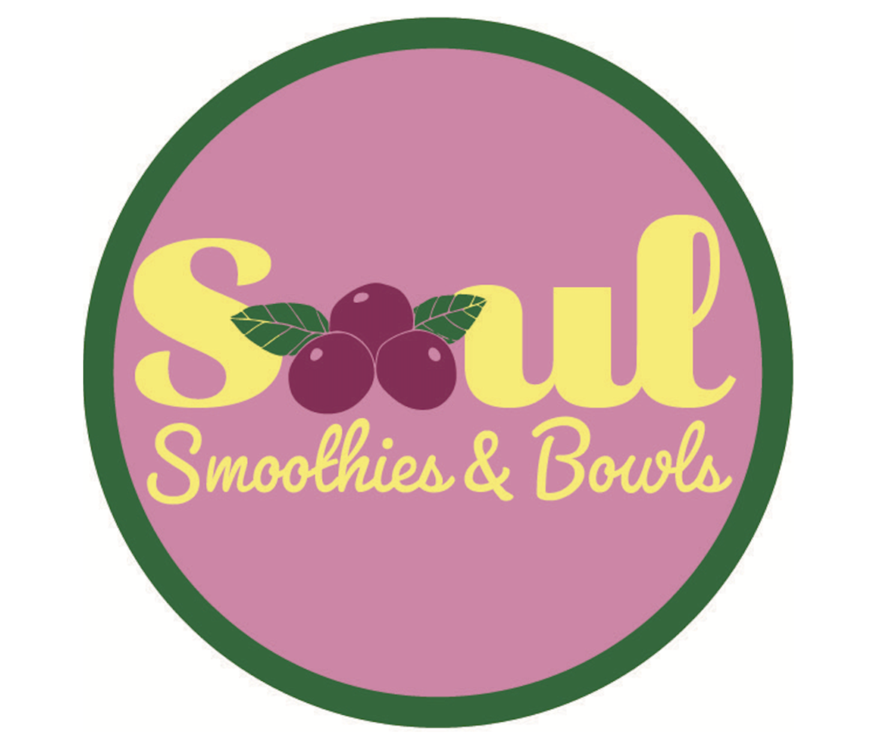
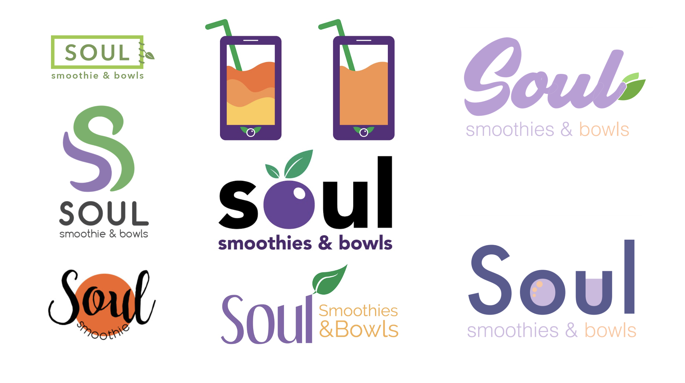

×

Soul Smoothie is a student startup focused on making healthy smoothies and acai bowls for University of Michigan students. Customers customize and purchase their bowls using a Soul Smoothie app, and pick up their order at the satellite store located within the Ross School of Business.
During fall 2018, Soul Smoothie reached out to CHISL — a pro-bono marketing club focusing on the design — for brand consulting prior to launch. As part of the Soul Smoothie team, I was first tasked with redesigning their logo.
After conducting a competitive audit against nearby yogurt and smoothie businesses, the CHISL Soul Smoothie team identified several problems with Soul Smoothie’s logo. While Soul Smoothie positions itself as the healthiest smoothie option near campus, their original logo didn’t reflect that. The shade of pink and yellow seemed sickly sweet, reminding the team of Pepto Bismol. On top of that, the script font being utilized felt old-fashioned and incompatible with their location at the Ross School of Business. These two design issues combined led us to pitching a logo redesign to Soul Smoothie.
The logo redesign was a semester-long iterative process. First, each team member designed two logos. We’d then convene and pitch our logos to each other and decide on which to show to the client. After the client looked at them, they’d send us back some feedback to iterate on. This process was repeated two-three times, before we finally landed on our final deliverable.
Through this experience, I was able to learn how collaboration plays a role in graphic design. Iterating through several logo designs taught me how to build off of my team’s ideas and communicate with one another verbally and visually.